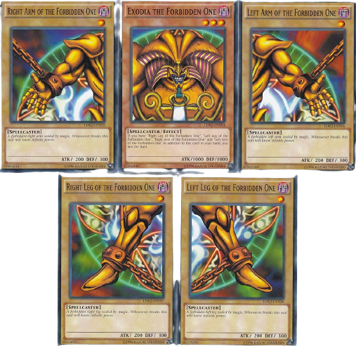

<div class="deck-container">
  <div class="deck-text">
    <h2>
      <span class="f-important-txt">Guarda tus </span>
      <span class="s-important-txt">cartas favoritas</span><br />
      y crea tu propio <span class="s-important-txt">mazo</span>.
    </h2>
    <ul>
      <li>- Ver detalle de tus cartas.</li>
      <li>- Elimina alguna carta de tu mazo.</li>
      <li>- Selecciona tu carta favorita.</li>
    </ul>
    <a href="#">Mi Mazo</a>
  </div>
  <div class="deck-img">
    
  </div>
</div>
